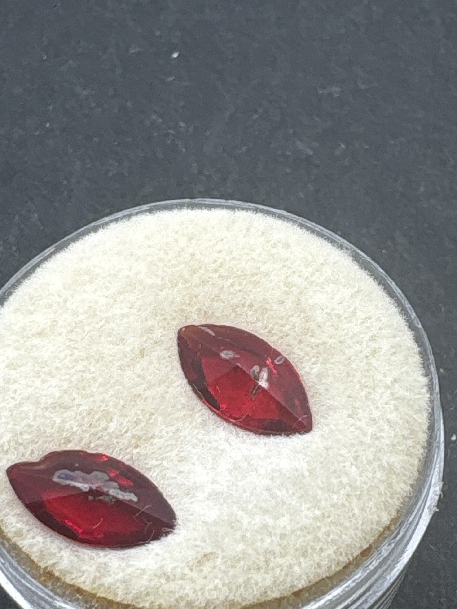

The Gem Drawer › No. 141

A matched pair of saturated red marquise stones; not offered as ruby.
| Catalogue no. | #141 |
|---|---|
| As labeled | UNIDENTIFIED - 2 vivid red marquise-cut stones, matching pair (no label; visual ID only, NOT confirmed as ruby - see notes) |
| Shape / cut | Marquise (both) |
| Weight | Not recorded |
| Measurements | Not recorded |
| Colour | Vivid, saturated red, matching pair |
| Clarity / condition | Not recorded |
Interested in this stone, or in the collection as a whole? Terry VanWormer can answer questions about it.
Click here to inquireor email Terry directly at maxrebo34@gmail.com